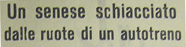
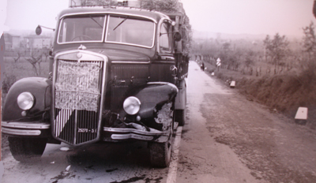

24 DICEMBRE 1960

Devo confessare che sono rimasto indeciso se riportare
l'articolo de "Il Mattino", che descriveva la morte di mio
nonno Bruno avvenuta durante le feste natalizie del 1960 a
seguito di un incidente automobilistico. A quel tempo non
avevo neppure sei anni e ne fui tenuto all'oscuro, ma quando
mi sono accinto a tracciare la storia dei Papei, non ho
potuto esimermi dal leggere il crudo linguaggio di quella
cronaca. Fra tutte, una frase mi rimase impressa: "sulla
macchina vi erano molti doni per i nipotini".
Come uno dei tre nipoti in questione (gli altri erano
Gian Piero e Sandro Nerli, figli di Mara Papei), non ho
quindi avuto esitazione e ho deciso la pubblicazione
integrale del trafiletto, cercando in qualche modo di
ricordare l'infinito affetto che nostro nonno ci aveva
dimostrato per l'ultima volta nella sua vita.
|
UN SENESE SCHIACCIATO DALLE RUOTE DI UN AUTOTRENO
Concessionario di una fabbrica di auto a Foligno, era stato per molti anni vice economo degli ospedali di Siena
Torrita, 24
A circa due chilometri dall'abitato, nel
tratto di levante dell'interprovinciale
Siena-Perugia, in località Belvedere, stamani
verso le 10 è avvenuto un tragico scontro di cui
è rimasto vittima il signor Bruno Papei, di 58
anni, senese, da anni residente a Foligno in via
Brigate Garibaldine 11, dove era concessionario
di una casa di automobili.
Il Papei era alla guida di una "600" targata
PG 36385 e aveva accanto la moglie Iris Frati,
di 57 anni. I due viaggiavano alla volta di
Siena per trascorrere il Natale unitamente ai
figli e ai nipoti.
Sulla macchina, infatti, vi erano molti doni
per i nipotini. Il Papei aveva appena effettuato
la curva detta di Galea, che si trovava di
fronte l'autotreno Lancia "Esatau" targato
SI 25270, condotto da Giulio Biancucci, di 38
anni, da Sinalunga, frazione Bettolle, carico di
laterizi, diretto a Perugia.
Probabilmente per evitare l'urto, il Papei
dava un colpo di sterzo verso destra, ma il
suolo reso viscido dalla pioggia faceva sbandare
l'utilitaria che slittava andando a sbattere
contro il parafango posteriore sinistro del
camion. Nell'urto lo sportello della "600" si
apriva e il guidatore veniva sbalzato sull'asfalto, andando a finire proprio davanti alla
ruota posteriore sinistra del pesante autotreno
che li schiacciava il torace.
Intanto la "600" con la signora Frati a
bordo finiva la sua corsa contro un muro.
Il Biancucci bloccava il pesante automezzo e
scendeva per prestare soccorso al Papei, ma
purtroppo tutto era inutile; il poveretto era
già morto. Allora apprestava aiuto alla signora
Frati, che veniva trasportata all'ospedale
Maestri dove le riscontravano una ferita alla
regione orbitaria sinistra, giudicata guaribile
il 8 giorni. Sul posto si recavano prontamente
il maresciallo maggiore Giuseppe Bertusi,
comandante la sezione dei carabinieri di Torrita
e il brigadiere Giuseppe Rinaldi, per gli
accertamenti del caso. Susseguentemente giungeva
il procuratore della Repubblica di Montepulciano
dott. Cappellina che ordinava la remozione del
cadavere nonchè la necroscopia che veniva
eseguita presso l'obitorio dell'ospedale di
Torrita.
Il Papei era molto conosciuto a Siena avendo
per lunghi anni ricoperto la carica di vice
economo degli ospedali riuniti di Santa Maria
della Scala, e la sua tragica fine ha suscitato
molta impressione.
(da il quotidiano "Il Mattino' del 25 dicembre 1960)

|
|